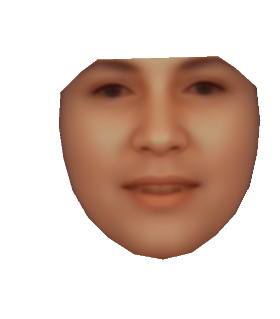
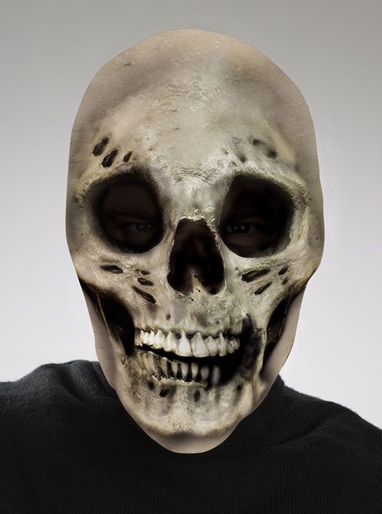
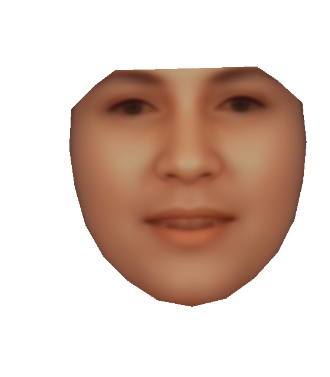
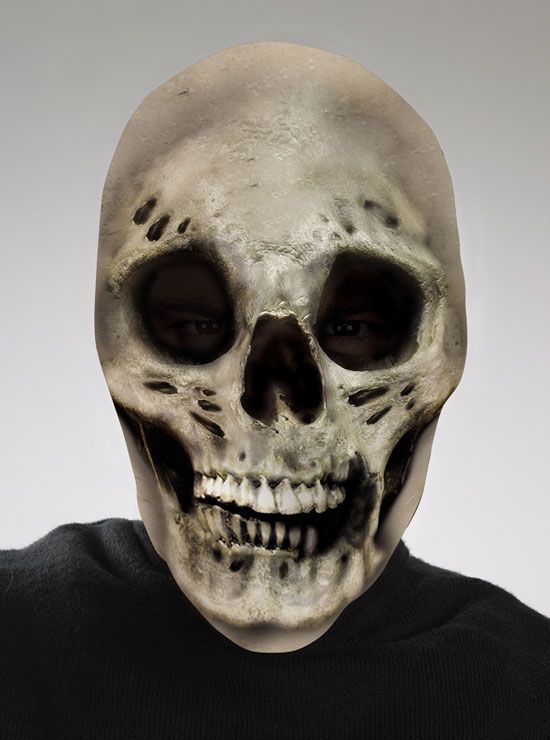

Face mask
This is an example of face masking using the javascript library clmtrackr.
Note that this example needs support for WebGL, and works best in Google Chrome.
To try it out:
- allow the page to use your webcamera
- make sure that your face is clearly visible in the video, and click start
- keep your face still, and wait till model fits your face and mask is applied
- try out different masks from the dropdown
There was some problem trying to capture your webcamera, please check that your browser supports WebRTC. Using a fallback video instead. try it out:
- click start
- wait till model fits the face and a mask is applied
- try out different masks from the dropdown
 


